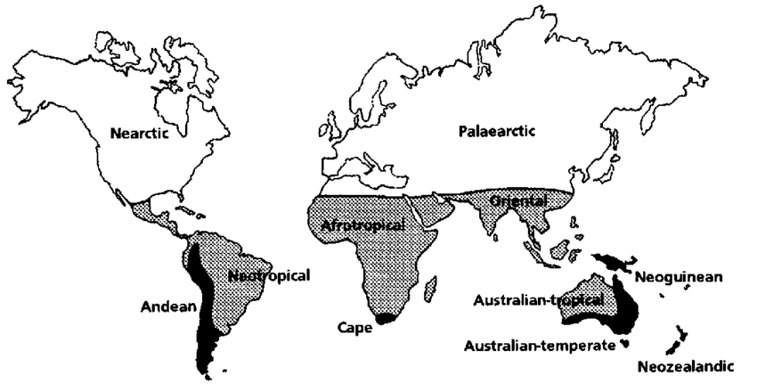
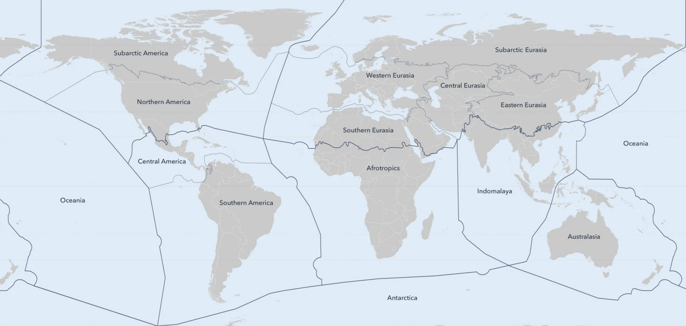
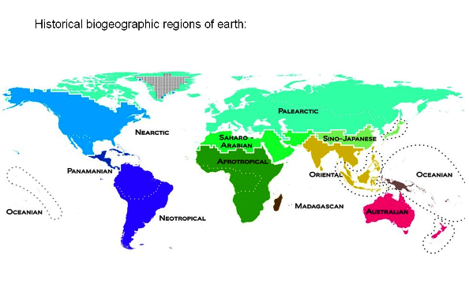

世界のバイオリージョン（簡易版）

世界のbioregionの分割例1
Regions and subregions of the world.
Holarctic region = Nearctic（新北区） + Palearctic（旧北区） subregions
Holotropical region = Neotropical（新熱帯区） + Afrotropical （エチオピア区）+ Oriental （東洋区）+ Australian tropical（オーストラリア区の一部） subregions
Austral = Andean + Cape（新熱帯区の一部） + Australian temperate + Neozealandic + Neoguinean（オーストラリア区の一部） subregions.

世界のbioregionの分割例2

世界のbioregionの分割例3